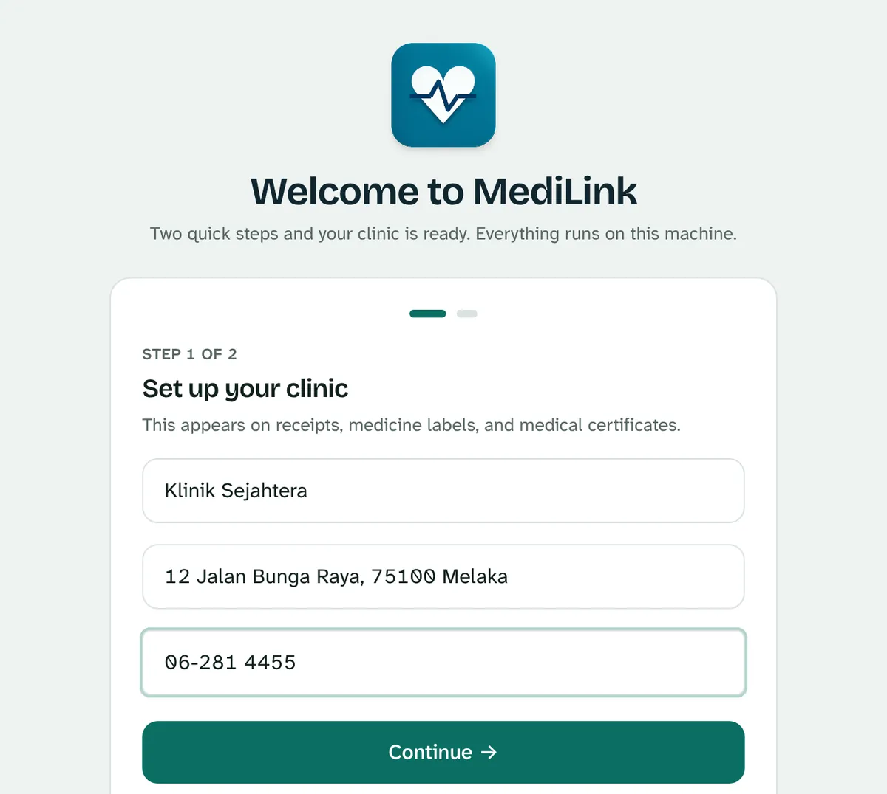
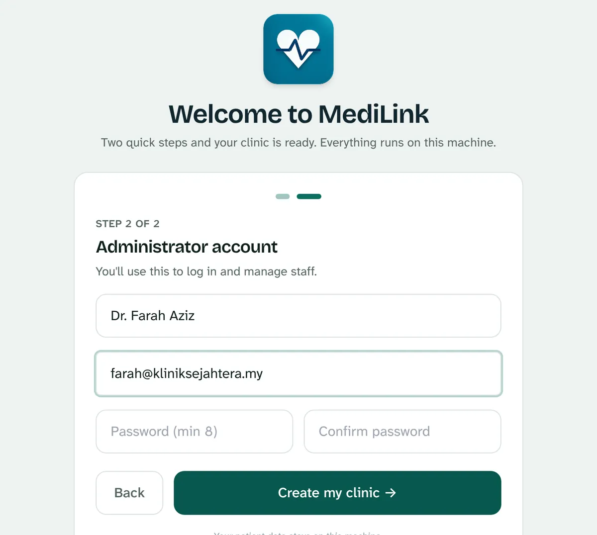
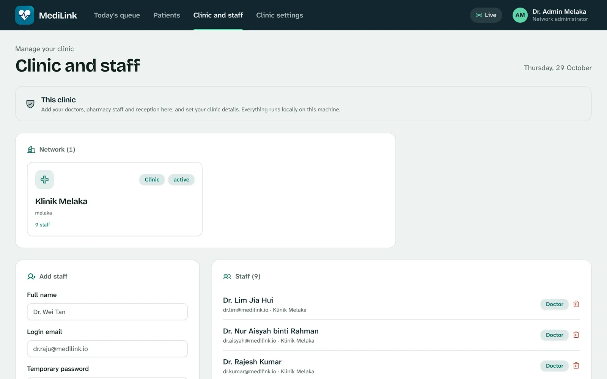
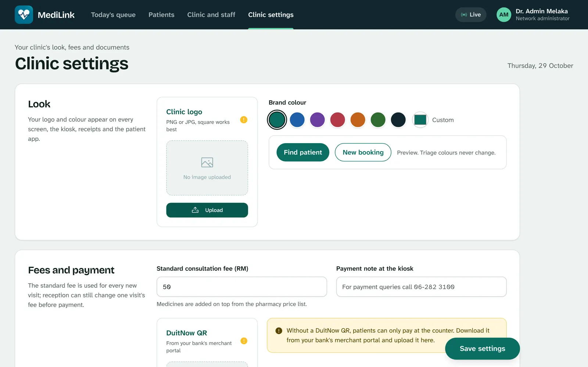
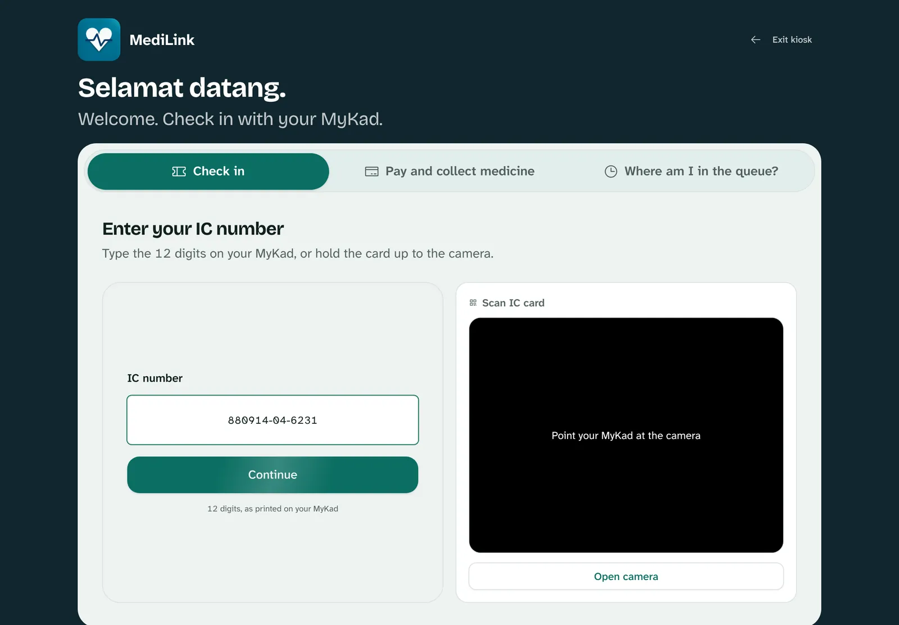
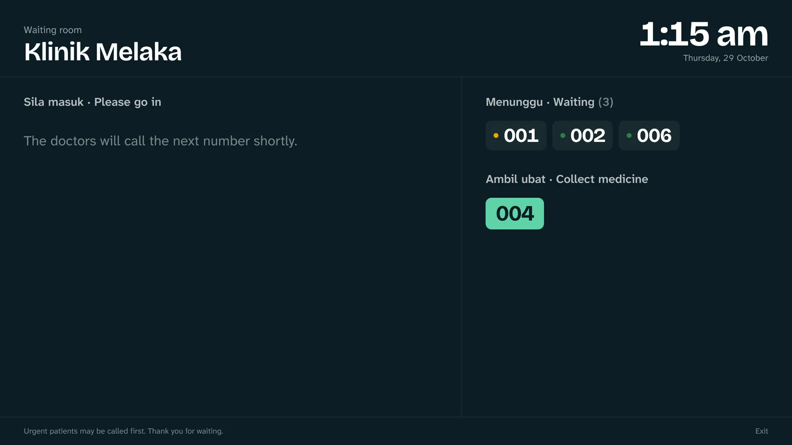
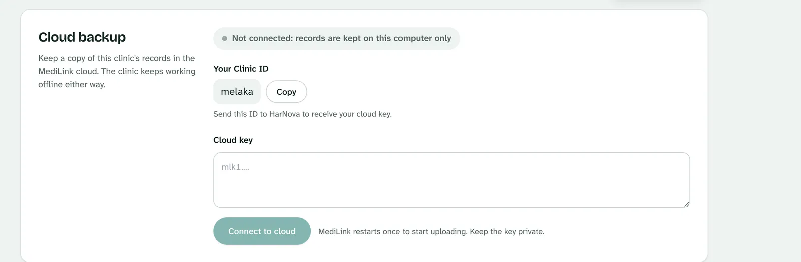

Setting up MediLink at your clinic
Follow these steps in order. Most clinics finish in an afternoon, and nothing here needs an IT person.
Before you start
MediLink runs on one computer at the clinic, usually the one at reception. Every other screen connects to it over the clinic's Wi-Fi, so that computer needs to stay on during opening hours.
What you need
- One computer with Windows 10 or 11, macOS 12 or newer, or Ubuntu 22.04 or newer. 4 GB of memory and 1 GB of free space is enough.
- Clinic Wi-Fi that the kiosk tablet, the doctor's computer and the TV can all join.
- Optional: a tablet for the kiosk, a TV or spare monitor for the waiting room, and your DuitNow QR image from your bank's merchant portal.
- A list of your staff with the email address each person will sign in with.
The internet only matters for cloud backup. The clinic runs normally without it.
Install MediLink
Once your trial is approved, HarNova emails you a download link. Pick the file for the reception computer: MediLink-Windows-x64.zip for Windows 10 or 11, MediLink-macOS-AppleSilicon.zip for a Mac with an M1 chip or later, MediLink-macOS-Intel.zip for an older Intel Mac, or MediLink-Linux-x64.tar.gz for Ubuntu. Then follow the steps for your system.
- Right-click MediLink-Windows-x64.zip, choose Extract All, and move the MediLink folder somewhere permanent, such as Documents.
- Open the folder and double-click MediLink.exe.
- If a blue "Windows protected your PC" box appears, click More info, then Run anyway. This trial build isn't signed with a Microsoft certificate yet, so Windows asks once.
- If Windows Firewall asks, tick Private networks and click Allow access. Without this, the kiosk tablet and other screens can't connect.
- Double-click the zip file and move the MediLink folder into Applications or Documents.
- Open the folder, right-click MediLink and choose Open, then Open again. This trial build isn't notarised by Apple yet, so the Mac asks once.
- If it still won't open, go to System Settings, Privacy & Security, scroll down and click Open Anyway.
- If the Mac asks whether MediLink may accept incoming connections, click Allow so other screens can connect.
- Unpack it:
tar xzf MediLink-Linux-x64.tar.gz - Start it:
./MediLink/MediLink - To choose the port yourself, add
--port 8001.
The MediLink window
When MediLink starts, a small window opens with the clinic's addresses, and your browser opens by itself. Keep this window open while the clinic is working. Closing it stops MediLink for every screen.
Name your clinic
The first time MediLink opens, the browser shows a two-screen setup.
- Clinic details. Enter the clinic's name, address and phone number. These appear on receipts, medicine labels and MCs.
- Administrator account. Enter your name, the email you'll sign in with and a password of at least 8 characters. This account can add staff and change settings, so keep the password safe.


Add your staff
Signed in as the administrator, open Clinic and staff from the top bar. Add each person with their name, sign-in email, a temporary password and their role.
- Doctor uses the consultation screen. Add their specialty if you like.
- Reception runs the queue, bookings and payments.
- Pharmacy dispenses paid prescriptions and manages stock.
Give each person their own sign-in rather than sharing one. When someone leaves, you can switch off their access without touching anyone else's.

Make it yours
Open Clinic settings. Everything you set here appears on the kiosk, the waiting-room screen, receipts, MCs and the patient app. Press Save settings when you're done.
| Section | What to fill in |
|---|---|
| Look | Your logo (PNG or JPG, square works best) and brand colour. Triage colours never change, whatever you pick. |
| Fees and payment | Standard consultation fee in RM, a payment note for the kiosk, and your DuitNow QR. Without the QR, patients can only pay at the counter. |
| Front door | Clinic name, phone, address, welcome message and opening hours. |
| Documents | Registration number, email, two letterhead lines and the receipt footer. |

Open the other screens
On each device, connect to the clinic Wi-Fi, open a web browser and type the Other devices address from the MediLink window, with the ending below. Then bookmark it, or add it to the home screen on a tablet.
| Where | Address (example) | Notes |
|---|---|---|
| Kiosk tablet | http://192.168.1.20:8001/kiosk | Patients check in here. No sign-in needed. |
| Waiting-room TV | http://192.168.1.20:8001/board | Shows queue numbers only. Put the browser in full screen. |
| Doctor's room, pharmacy | http://192.168.1.20:8001 | Each person signs in with their own account. |
| Patients' phones | http://192.168.1.20:8001 | Patients sign in with their IC number while on the clinic Wi-Fi. |


If a device can't open the address, check it's on the same Wi-Fi as the reception computer, and that MediLink was allowed through the firewall in step 2.
Turn on cloud backup
Cloud backup keeps a copy of your records off-site. It's optional, but we recommend it: if the reception computer is lost or breaks, your records are still safe. The clinic keeps working offline either way.
- Open Clinic settings and scroll to Cloud backup. It shows Not connected and your Clinic ID.
- Press Copy and send the Clinic ID to hello@harnova.my.
- HarNova replies with your cloud key, a long code that starts with
mlk1. - Paste the key into the Cloud key box and press Connect to cloud.
- MediLink checks the key and restarts itself once. The page reloads after a few seconds and shows Connected. Your existing records start uploading straight away.

What the status means
- Connected, Everything uploaded: the cloud copy matches the clinic.
- Connected, cloud unreachable right now: the internet is down. Keep working; changes upload by themselves when it's back.
- Not connected: records are kept on this computer only.
Treat the cloud key like a password. Anyone with it can upload to your clinic's backup. If it leaks, ask HarNova for a new one; the old key stops working.
A normal clinic day
- Turn on the reception computer and open MediLink. Open the kiosk and the waiting-room screen if they were closed.
- Patients check in at the kiosk, or reception adds them. Each gets a queue number and a triage colour.
- The doctor opens the next patient, writes the record and prescription, and prints an MC if needed.
- The patient pays by DuitNow QR or at the counter. Reception confirms the payment.
- The paid prescription appears at the pharmacy. Check it, hand it over, press Dispense.
- Reception checks the day's cash report. Leave MediLink running until everyone has finished, then close its window.
Backups and problems
Keep your own backup too
Once a week, copy MediLink's data folder to an external drive. Copy the whole folder, including keys.json: without it, the identity card numbers stored in the records can't be read.
| Computer | Data folder |
|---|---|
| Windows | %LOCALAPPDATA%\MediLink |
| Mac | ~/Library/Application Support/MediLink |
| Linux | ~/.local/share/medilink |
If something isn't working
- The kiosk or TV says it can't reach the site.
- Check the MediLink window is still open on the reception computer, the device is on the same Wi-Fi, and the address matches the Other devices line exactly.
- The address changed after a restart.
- Routers sometimes give the computer a new address. Read the new one from the MediLink window and update the bookmarks. Asking your router to always give the reception computer the same address stops this.
- Windows or the Mac won't open MediLink.
- Follow the warning steps in step 2. They are needed once per computer.
- Connect to cloud says the key isn't valid.
- Copy the whole key, starting from
mlk1., with no spaces at either end. A key only works for the Clinic ID it was issued for. - Anything else.
- Email hello@harnova.my with your Clinic ID and a photo of the screen. During the trial we'll help you directly.